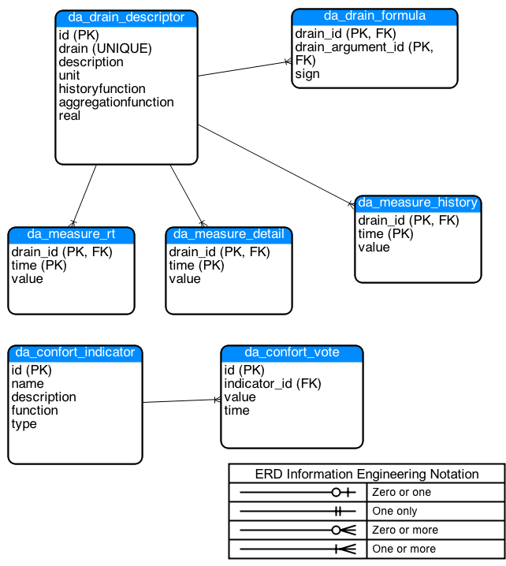

<div class="container">
    <div class="row"> 
        <div class="col-lg-3 col-md-3">
            {% include developer-side-navbar.html %}
        </div>
        <div class="col-lg-9 col-md-9">  
            <section id="architecture">
                <div class="page-header">
                    <h2>{{ site.t[page.lang].architecture }}</h2>
                </div>
                <h3> Schema DB Postgres </h3>
                <p> La figura mostra lo schema ER del database di iEnergy.</p>
                
                <p>Di seguito è riportato il dettaglio delle relazioni coinvolte:</p>
                <p><b>da_drain_descriptor</b></p>
                <p>Questa relazione contiene la descrizione/definizione dei drain definiti nel sistema, nel dettaglio la tabella contiene le seguenti informazioni:</p>
                <ul>
                    <li><b>id</b>: identificativo univoco del drain </li>
                    <li><b>drain</b>: nome del drain (uppercase)</li>
                    <li><b>description</b>: descrizione del drain</li>
                    <li><b>unit</b>: unità di misura del drain</li>
                    <li><b>historyfunction</b>: funzione di aggregazione da utilizzare durante il processo di storicizzazione dei dati (passaggio da detail a history). Funzioni al momento supportate (AVG, SUM, FIRST, LAST)</li>
                    <li><b>aggregationfunction</b>: funzione di aggregazione da utilizzare in fase di interrogazione con aggregazioni temporali diverse dal minuto (paramatro opzionale, default pari ad AVG). Valori possibili AVG, SUM, MAX, MIN</li>
                    <li><b>real</b>: indica se ma misura è reale oppure ottenuta tramite la somma o sottrazione di potenze quindi virtuale</li>
                </ul>   
                <p><b>da_drain_formula</b></p>
                <p>Questa relazione contiene la descrizione delle formule nel caso di drain di tipo virtuale con supporto delle sola operazione di somma.</p>
                <ul>
                    <li><b>drain_id</b>: identificativo del drain corrispondente alla formula </li>
                    <li><b>drain_argument_id</b>: identificativo del drain facente parte della formula (argomento)</li>
                    <li><b>sign</b>: egno da applicare alla formula (1 per somma -1 per differenza) </li>
                </ul>  
                <p><b>da_measure_XX</b></p>
                <p>La relazione contiene le misure relative ai sensori definiti durante l'installazione, con il tempo della misura ed il valore ad essa associata. Le tabelle sono due: <b>da_measure_history</b> e <b>da_measure_detail</b>, che contengono rispettivamente le misure storiche (dettaglio ad 1 ora) e le misure dettagliate in base alla configurazione di spchain.</p>
                <p><b>da_measure_rt</b></p>
                <p>Contiene le misure istantanee dei misuratori. Il tempo di aggiornamento della misura dipende dalla tecnologia utilizzata (es modbus polling ogni 10 secondi). </p>
                <p><b>da_confort_indicator</b></p>
                <p>Contiene la definizione degli indicatori di confort </p>
                <ul>
                    <li><b>id</b>: identificativo del drain </li>
                    <li><b>name</b>: il nome del indicatore di confort </li>
                    <li><b>description</b>: descrizione del drain </li>
                    <li><b>function</b>: definisce la funziona di aggregazione da applicare alle votazioni </li>
                    <li><b>type</b>: indica il tipo di indicatore di confort </p>
                </ul>
                <p class="pull-right"><a href="#">{{ site.t[page.lang].back_to_top }}</a></p>
            </section>
            <section id="components">
                <div class="page-header">
                    <h2>{{ site.t[page.lang].components }}</h2>
                </div>
                <p> Di seguito sono elencate le componenti necessarie al corretto funzionamento di un sistema basato su iEnergy</p>
                <h3>Bundle iEnergy</h3>
                <p>Per il corretto funzionamento di iEnergy è necessario il gatway domotico Dog, che permette la comunicazione del sistema con varie tecnologie di dispositivi installati sul campo (http://dog-gateway.github.io/)</p>
                <p>In aggiunta alla versione di Dog, è necessario aggiungere il bundle it.proximacentauri.ienergy.osgi, il quale si occupa di memorizzare le misure istantanee/dettaglio nella base dati rendendole disponibili al utente.</p>
                <h3>iEnergyDa</h3>
                <p>Questo modulo si occupa della memorizzazione storica dei dati provenienti da Dog nella base dati di Postgres. Inoltre si occupa di fornire una serie di API REST/JSON disponibili a diverse tipologie di client (come web o mobile).</p>
                <p>La parte di gestione delle misure permette la gestione delle misure di dettaglio (cadenza ongi 10 minuti), storiche (cadenza oraria) e real-time provenienti dal campo. Il modulo di gestione non restituisce semplicemente le misure ma consente anche di utilizzare delle funzioni di aggregazione (somme, medie etc..) a vari livelli di aggregazione temporale (minuti, ore, giorni ...). 
                    Sempre nel contesto delle gestione delle misure è disponibile un'interfaccia di configurazione, attraverso cui è possibbile definire le modalità di effettuazione delle misure (es: tipo di storicizzazione).</p>
                <p>Il modulo si occupa anche della gestione degli indicatori di confort ambientale percepito degli utenti.</p>
                <h3>ETL</h3>
                <p>Modulo di trasformazione dei dati di dettaglio in dati storici in accordo con la descrizione del sensore riportato nella base dati in fase di configurazione. </p>
                <h3>IEnergyUtil</h3>
                <p>Questo modulo permette di accedere come amministratore alla gestione dei drain e degli indicatori di confort.</p>
                <p class="pull-right"><a href="#">{{ site.t[page.lang].back_to_top }}</a></p>
            </section>
            <section id="installation">
                <div class="page-header">
                    <h2>{{ site.t[page.lang].installation }}</h2>
                </div>
                <h3>Requisiti</h3>
                <p>I requisiti per l'installazione di iEnergy sono:</p>
                <ul>
                    <li>Server Linux con distribuzione debian</li>
                    <li>Java 1.7+</li>
                    <li>Tomcat 7+</li>
                    <li>Dog 2.5+</li>
                    <li>Postgres 9+</li>
                </ul>
                <h3>Dog</h3>
                <p>Per la parte del campo bisogna fare affidamento all'installazione di Dog secondo quanto riportato sul sito del progetto http://dog-gateway.github.io/, a cui aggiungere il bundle it.proximacentauri.ienergy.osgi. </p>
                <p> I moduli necessari in Dog sono:</p>
                <ul>
                    <li>spchain - stream processor</li>
                    <li>xively/cosmoutlet</li>
                    <li>Driver di rete a seconda del caso</li>
                </ul>
                <p>La configurazione prevede l'aggiunta del file di configurazione it.proximacentauri.ienergy.osgi.config che include: </p>
                <div class="code">
                    # mapping between dog devices and measure<br>
                    source.mapping=sourceDeviceMapping.xml<br>
                    #source drain remove pattern (reg expression)<br>
                    source.removePattern=-raw<br>
                    db.driver=org.postgresql.Driver<br>
                    db.url=jdbc:postgresql://localhost:5432/ienergy<br>
                    db.username=xxx<br>
                    db.password=xxx<br>
                    db.maxActive=10<br>
                </div>
                <p>Dove abbiamo </p>
                <ul>
                    <li>source.mapping - indica il file di mapping nell'associazione tra eventi di dog e il nome dei drain </li>
                    <li>source.removePattern - indica il pattern da rimuovere sul nome dei drain delle misure (espressione regolare). Questo è necessario perchè all'ingresso in spchaingli eventi sono generalmente con il nome raw e all'uscita non presentano questo nome essendo una misura processata. Il pattern ha lo scopo di mantenere l'associazione tra misura lavorata e misura real time.  </li>
                    <li>db.X - indicare i parametri di accesso alla base dati</li>
                </ul>
                <p> Il secondo punto di configurazione riguarda xively COSMOutlet.config/it.polito.elite.dog.addons.xively.client.cfg</p>
                <div class="code">
                    # ----------- COSMOutlet configuration -------------------
                    # the API key, only needed for the real COSM web site<br>
                    # cosm.Key =<br>
                    # the media type to be delivered, either application/xml or application/json<br>
                    cosm.mediaType = application/json<br>
                    # The COSM base datastream uri for measures (must end with a trailing /)<br>
                    cosm.events.feedURL = http://localhost:8080/JeerpDa/processing/<br>
                    # The default feed id for measures (no trailing /)<br>
                    cosm.events.default = 106199<br>
                    # The COSM base datastream uri for alerts (must end with a trailing /)<br>
                    cosm.alerts.feedURL = http://localhost:8080/IEnergyDa/alerts/<br>
                    # The default feed id for alerts (no trailing /)<br>
                    cosm.alerts.default = 106199<br>
                    # The COSM waiting list size (number of alerts/events sent in the same request, up to 500)<br>
                    cosm.waitingList.size = 1<br>
                    # The delivery queue maximum size<br>
                    # if set to 0 the queue has no limit (be aware of possible out-of-memory errors)<br>
                    cosm.deliveryQueue.size = 100<br>
                    # The waiting list self-tune flag, <br>
                    # if true the delivery queue automatically changes the size of the delivered JSON array<br>
                    # to avoid (or at least limit) event dropping<br>
                    cosm.deliveryQueue.selfTune = true<br>
                </div>
                <p>Ultimo elemento è creare la la base dati secondo lo schema visto nella prima sezione.</p>
                
                <h3>IEnergyDa</h3>
                <p>L'installazione della parte di analisi è il classico .war che puo essere installato in tomcat 7+. La configurazione è molto semplice e riguarda il file jeerpda.properties</p>
                <div class="code">
                    db.url=jdbc:postgresql://10.10.10.196:5432/ienergy
                    db.username=xxx
                    db.password=xxx
                </div>
                <p>In pratica servono i parametri di accesso alla base dati basata su Postgres.</p>
                <p>Inoltre se è necessario utilizzare le funzioni dispositive che sono protette da spring security, si deve configurare il file spring-security.xml</p>
                <h3>IEnergyUtil</h3>
                <p> Per questa applicazione è sufficiente il deploy </p>
                <h3>ETL</h3>
                <p>Per la parte di trasformazione etl, è necessario procedere alla configurazione dei parametri di configurazione del database</p>
                <p class="pull-right"><a href="#">{{ site.t[page.lang].back_to_top }}</a></p>
            </section>
        </div>
    </div>
</div>